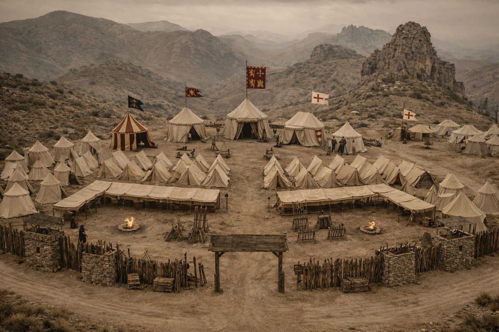
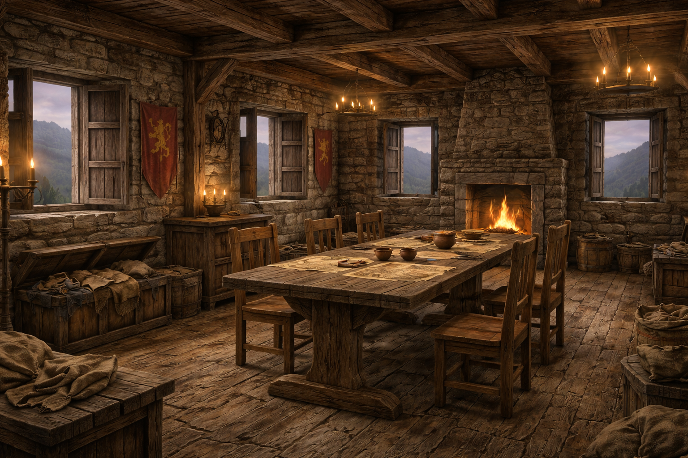
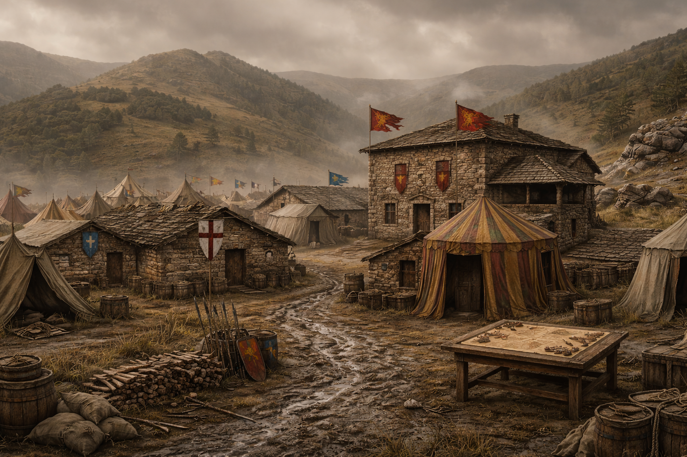
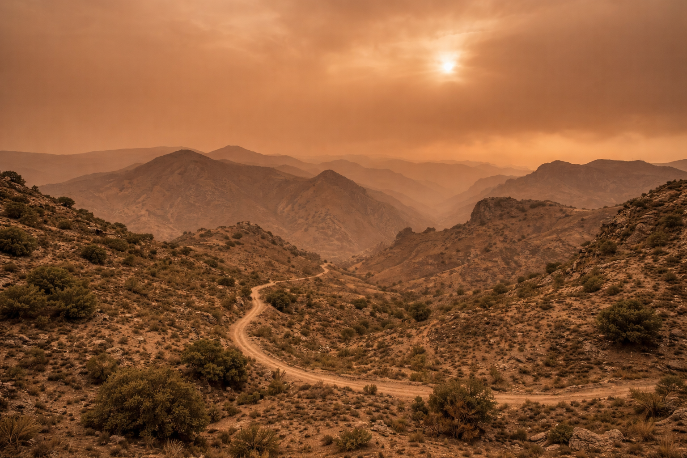
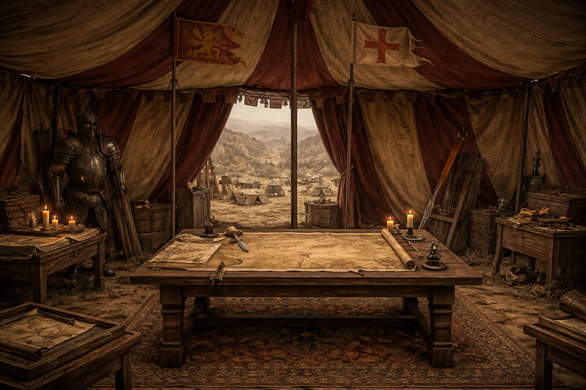
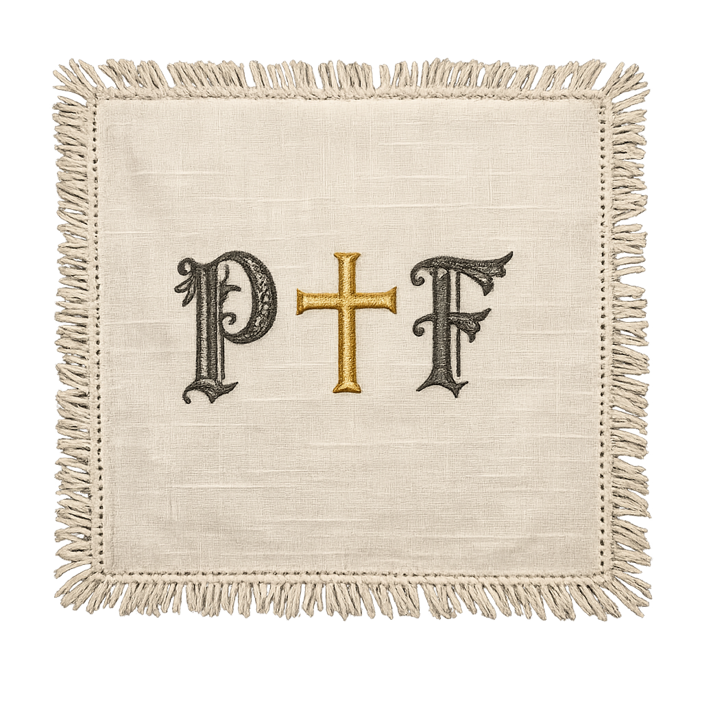

Navas de Tolosa 1212
Producción de un cortometraje histórico generado íntegramente mediante Inteligencia Artificial, como recurso audiovisual divulgativo para el Museo de la Batalla de las Navas de Tolosa
Historia épica,
creación artificial.
El 16 de julio de 1212, en Sierra Morena, las fuerzas de los reinos cristianos de Castilla, Aragón y Navarra se enfrentaron al ejército almohade del califa Muhammad an-Nasir en uno de los combates más decisivos de la historia de la Península Ibérica.
El equipo JEN Estancias propone al Museo de la Batalla de las Navas de Tolosa la producción de un cortometraje documental-histórico generado íntegramente con Inteligencia Artificial, que sirva como recurso audiovisual permanente del centro.
El cortometraje combinará precisión histórica, rigor arqueológico y las tecnologías de IA generativa más avanzadas del momento, creando un producto audiovisual de alto valor divulgativo, educativo y patrimonial.
- Ref. Presupuesto
- JEN-2026-001
- Fecha
- Abril 2026
- Cliente
- Museo Navas de Tolosa
- Organismo
- Diputación de Jaén
- Formato
- MP4 · HD 1280x720
- Duración estimada
- 3-6 minutos
- Tecnología
- 99% IA Generativa
- Equipo
- 3 personas · JEN Estancias
Enfoque general
del proyecto.
La propuesta plantea la producción de un cortometraje audiovisual sobre la Batalla de las Navas de Tolosa, concebido como un recurso multimedia permanente para el Museo, que podrá ser proyectado en sala, embebido en la web del centro o accesible mediante códigos QR integrados en el recorrido físico de la exposición.
Contenido audiovisual
Producción de un cortometraje de entre 3 y 6 minutos que narra el contexto histórico, el desarrollo de la batalla y su importancia en la historia de España.
- Imágenes generadas con Gemini Pro
- Secuencias de vídeo con SuperGrok
- Banda sonora generada con Suno AI
Rigor histórico
Todo el contenido ha sido supervisado con fuentes documentales históricas sobre la batalla, garantizando la precisión en indumentaria, armas, geografía y cronología.
- Informe de investigación histórica
- Consulta de fuentes primarias y secundarias
- Coherencia con la exposición del Museo
- Alineado con el discurso museográfico
Integración en el Museo
El material producido está pensado para integrarse de forma natural en los espacios y la comunicación del Museo.
- Proyección en sala del centro expositivo
- Versión embebida para la web del Museo
Entregables finales
A la finalización del proyecto se realizará la entrega completa de todos los materiales generados, en formatos abiertos.
- Cortometraje en MP4 HD y versión web
- Guion completo del cortometraje
- Pack de imágenes generadas con IA
- Archivos de audio y banda sonora
- Documentación y memoria técnica
| Objetivo del Museo | Solución propuesta |
|---|---|
| Divulgación histórica | Cortometraje narrativo con rigor documental |
| Atracción de público joven | Formato visual dinámico generado con IA |
| Contenido educativo | Guion documentado y subtitulado |
| Innovación tecnológica | Producción 99% con IA generativa |
El arsenal
tecnológico.
Presupuesto
de producción.
| Concepto | Detalle | Coste |
|---|---|---|
| Grok Heavy (xAI) | Generación de clips de vídeo cinemáticos y procesamiento de alta carga | 300,00 € |
| Gemini Pro (Google) | Generación de escenarios fotorealistas y diseño avanzado de personajes | 274,00 € |
| Runway ML | Composición de vídeo, unión de fragmentos y herramientas de interpolación | 95,00 € |
| Claude Pro (Anthropic) | Arquitectura de código, lógica de programación y estructura de la web | 22,00 € |
| CapCut Pro | Edición final, efectos de postprocesado y masterización audiovisual | 15,00 € |
| GitHub | Sistema de control de versiones y repositorio de activos del proyecto | 15,00 € |
| Planificación Operativa | Diseño del roadmap de producción y coordinación de fases de entrega | 60,00 € |
| Investigación histórica | Documentación y validación de fuentes para rigor del contenido | 50,00 € |
| Redacción de guion | Desarrollo de narrativa, diálogos y estructura literaria | 80,00 € |
| Montaje audiovisual | Edición profesional, curación de clips IA y sincronización | 120,00 € |
| Diseño web de propuesta | Implementación de interfaz, despliegue de código y experiencia de usuario | 80,00 € |
| Horas de producción equipo | Operación técnica de 3 especialistas, prompting y calidad | 369,00 € |
| Base imponible | 1.480,00 € | |
| IVA 21% | 310,80 € | |
| TOTAL IMPUESTOS INCLUIDOS | 1.790,80 € | |
Entre el equipo de producción JEN Estancias (el Productor) y el Museo de la Batalla de las Navas de Tolosa, Diputación de Jaén (el Comitente), se establecen los siguientes términos:
- Entrega del cortometraje en formato MP4 HD (1280x720) y versión web optimizada
- Derechos de uso para proyección, web y difusión no comercial del Museo
- Hasta 2 rondas de revisión incluidas en el precio
- Entrega de todos los archivos fuente y materiales generados
- Plazo de ejecución: 3 semanas en abril de 2026
Imágenes generadas
con Inteligencia Artificial.
Recursos visuales producidos para el cortometraje mediante herramientas de IA generativa. Organizado por categorías: escenarios, personajes y objetos históricos.





Objetos — Props del Cortometraje
Objetos históricos generados con IA para enriquecer la ambientación del cortometraje. Materiales de época con detalle arqueológico.

Equipo
asignado.
Jose Antonio Fernández Iglesias
Director de Proyecto & Producción
Responsable de la dirección general del proyecto, coordinación del equipo, gestión del repositorio GitHub y supervisión de la entrega final al cliente.
Elisabeth Ruffolo García
Guion e Investigación Histórica
A cargo de la investigación histórica, redacción del guion literario y técnico, documentación del proceso y coordinación con el contenido del Museo.
Néstor Fernández García
Generación Visual & Postproducción
Responsable de la generación de imágenes y vídeo con IA, síntesis de audio, montaje del cortometraje y entrega de materiales finales.